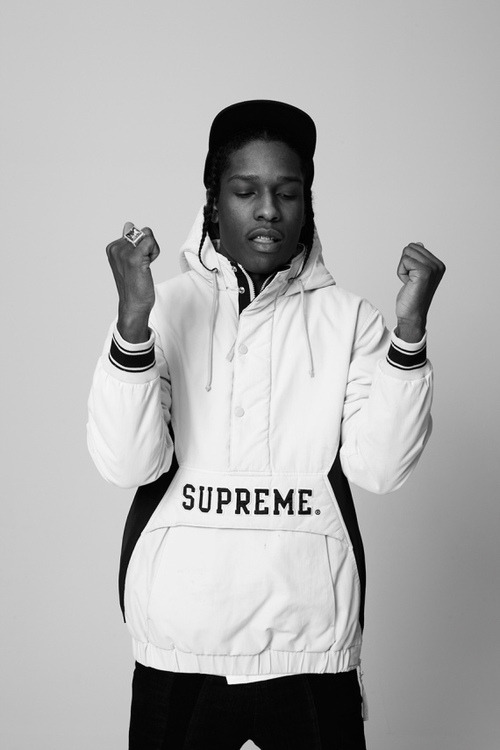

The brand is in a class of its own, being one of the first names in skate
wear to actually cross cultural borders between hip-hop, art, high-fashion,
pop and more. Never has been a brand so polarizing now too, with devoted fans
still praising its subversively cool aesthetic and haters bashing the brand
for fueling the negative ideologies of ‘hype.’
But whether you get it or not, founder James Jebbia has carefully curated Supreme’s
street-meets-art culture ethos for those in the know. The result has been of
course, met with ravenous acceptance as hordes of streetwear fans are still
willing to pay top dollar — even at a sometimes 2000% mark-up in re-sellers
market — for its logo-adorned goods.
A$AP Rocky wearing Supreme

Originally a skate shop, “Supreme wasn’t meant to be a brand. I just was
like, ‘Hey, that’s a cool name for a store.’ Founder James Jebbia went on to say, “With Supreme,
there were no grand plans—with the name, with the store, with anything. It all just evolved.
“A lot of us who didn’t have apartments, who had weird situations,
we all knew we could go there, get a meal, have a beer, a smoke,” said Mr. Bondaroff,
the gallerist, who was a high-school dropout from Brooklyn at the time.